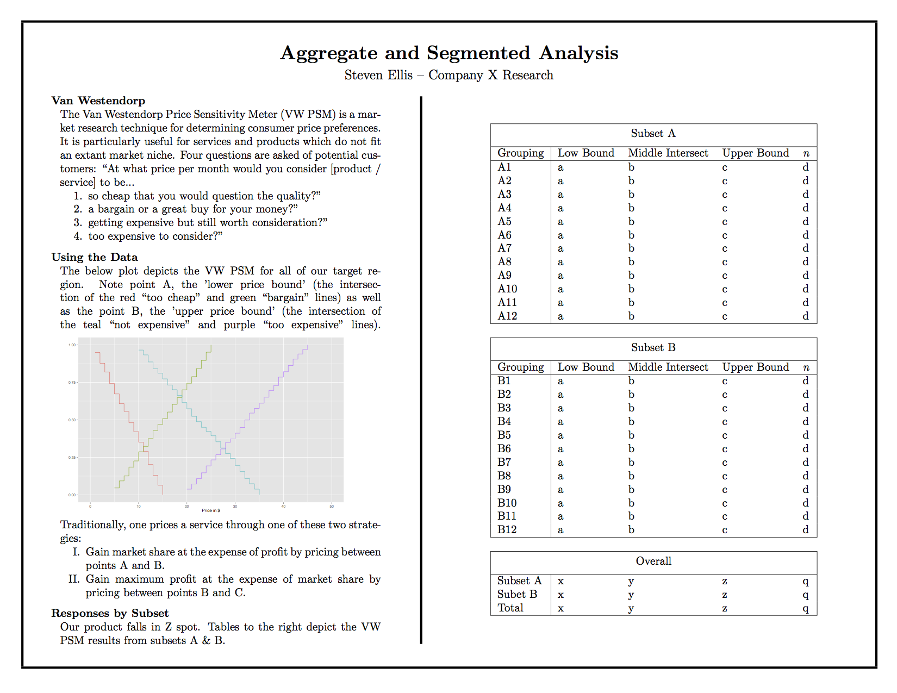

Producing a beautiful, tangible infographic gives you two key advantages in an industry setting:
- You can deliver it ahead of your presentation, giving your audience time to absorb it at their own pace
- A high quality graphic sticks around, both on the desk/wall of your audience, and in their minds
A good static visualization conveys the "what", the "so what", and the "now what". Including a methods paragraph can ensure that the recipient feels confident that they're drawing the right conclusions, but is not appropriate for every audience.
This viz could be the results of a model simulation, along with recommendations (based loosely on the RapGenius post "Heroku's Ugly Secret"):
It could be the aggregate results of an analysis, along with the results sliced by various segments and sub-segments:

Or results of a survey shown and sliced by geography (as in Tufte's small multiples).